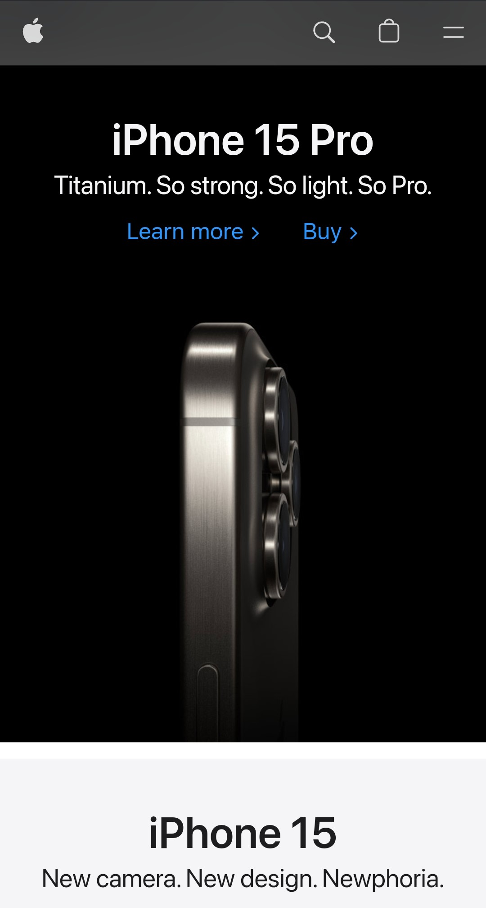

Contrast
Apple Website
Apple.com Apple's website uses a simple, mostly black and white color scheme to communicate its ideas. This results in everything being clear, clean, and easy to read.
Hick's Law
Church Website
LDS.orgHick's Law has to do with the user's ease of finding what they need. I think the church's website does a good job at not providing an overwhelming amount of content and options on its landing page.
Whitespace & Clean Design
Exploding Kittens Website
Explodingkittens.comThe visual design of the Exploding Kittens website is appealing because it makes use of whitespace and clean design. It's not cluttered, and the spaces between elements on the page emphasize what's important, while overall just looking clean.